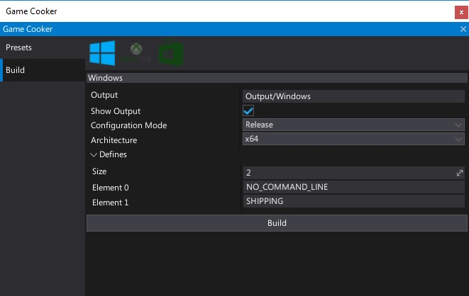
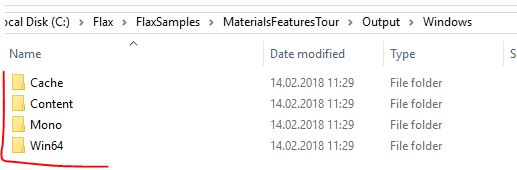

Distribute your game
When you're ready to publish your game, create a release build with Game Cooker, and distribute it. Please follow these steps.
1. Create a game and run it through Quality Assurance
Before you can publish your game you must first ideally have a developed game and perform enough QA to deliver a high-quality product.
2. Follow the guidelines
All commercial games made using the Flax Engine must follow various guidelines. It's required by the EULA which has to be accepted before installing the engine. It does not affect truly uncommercial products (educational, totally free). Please visit Commercial Product Release Guidelines page to learn more.
3. Build a game
Now to prepare the final build. Remember to use Release mode and remove any debug/testing code sections with preprocessor variables. Use the Game Cooker tool to generate the game files for a target platform.

4. Distribute your game
Every platform has it's own building process and custom output data format but in most cases simply grab the files from the Output directory. How you distribute it is up to you.
